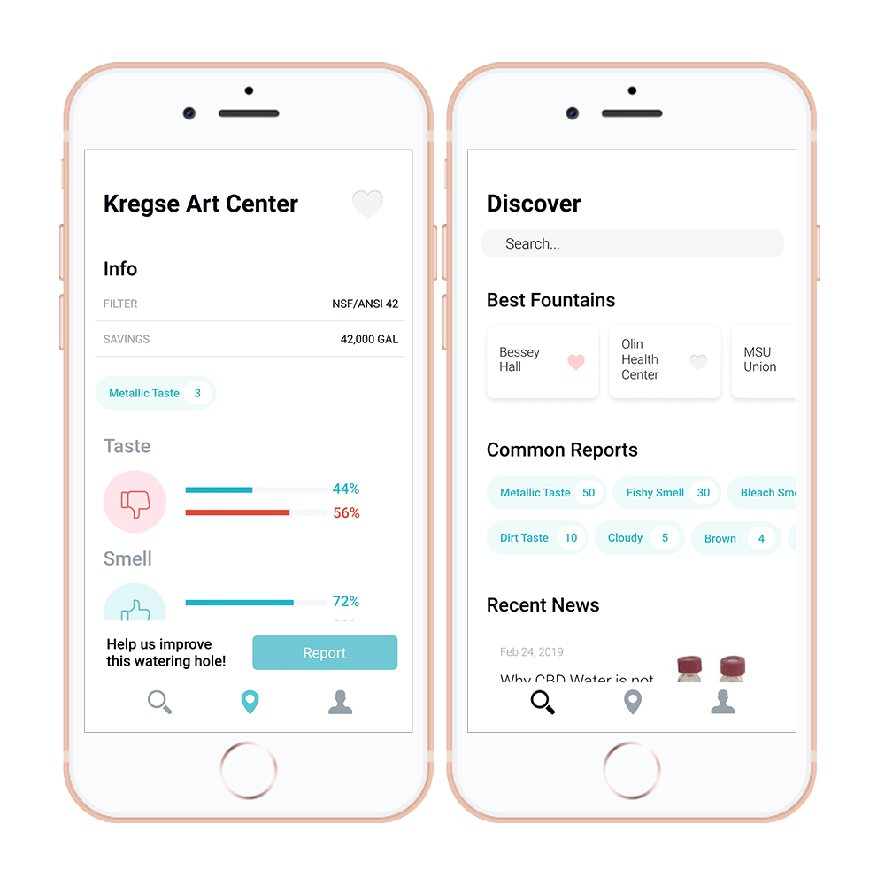

Transforming the way we think about public drinking fountains
As a witness to the devastating effects of the Flint Water Crisis, I designed an application to easily report water quality on our campus. I believe this solution has the power to inspire a community to be passionate about the safety and quality of public drinking water.
The challenge
- Reducing public stigma around public drinking fountains.
- Making it easy for the community to find safe drinking water.
- Keeping students and faculty safe from drinking harmful pollutants.
Our approach
- Gaining a holistic understanding of public drinking water systems.
- Creating a way for users to effortlessly report water quality.
my role
UX & UI Designer
project type
Student Project
project duration
3 Months
tools
Pop App, Figma
Taking student safety seriously
After some preliminary research, I learned the dangers of toxins like lead and bacterial threats like e coli. These pollutants can leave students at serious risk, especially at public drinking fountains. To ensure the public’s safety, I decided to design the application in a way that allows users to report any drinking fountain on campus.
The low fidelity designs were tested using the Pop app. A user could access a map of campus or view individual floors of buildings. Using the application, a user could view whether a fountain was safe to drink from. The status of a drinking fountain would be determined by user input and reports from the local water treatment facility.
First iteration after further research
While testing the prototype, I recognized that the app was both too complex and redundant. The water treatment facility personnel informed me that two fountains in the same building would not vary in safety. I decided to apply this information to my designs.
Instead of reviewing every drinking fountain in a building, I changed the goal of the application to review just one fountain in each building. This decision made the app much less complex. I removed the need for a map and reduced a lot of unnecessary content. I started playing with ways to simplify user testing in this second version.
Final solution
The final design provides the user with useful data about drinking fountains on campus. After some further research, I finalized the necessary information users would need to report for the local water treatment facility. This data would also be provided to the local water treatment facility, allowing their team to diagnose any problems much easier.
Here is an animation demonstrating the reporting feature: